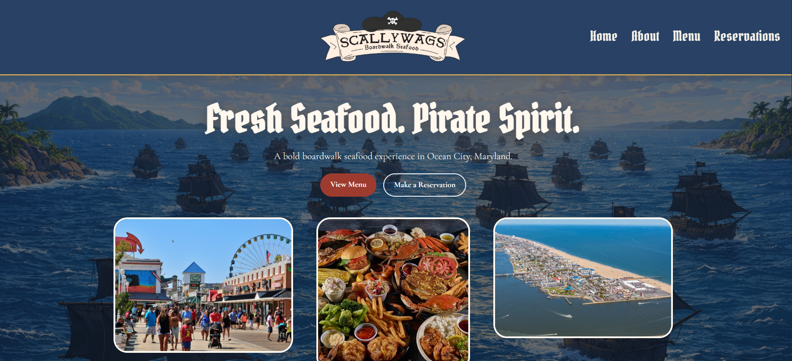
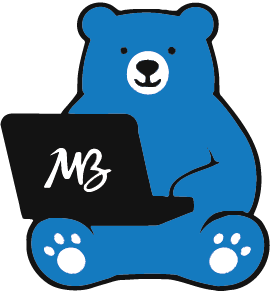

Scallywags Boardwalk Seafood
A web project focused on visual identity, structure, and branded presentation.
Launch Site →
Development Portfolio
A selection of websites and interactive projects I’ve built. Each project can be explored directly through a live preview.

A web project focused on visual identity, structure, and branded presentation.
Launch Site →A freelance project for an upcoming Precious Metals business in Lansdale, Pennsylvania.
In ProgressAdditional development work will be added here as the portfolio continues to grow.
In Progress